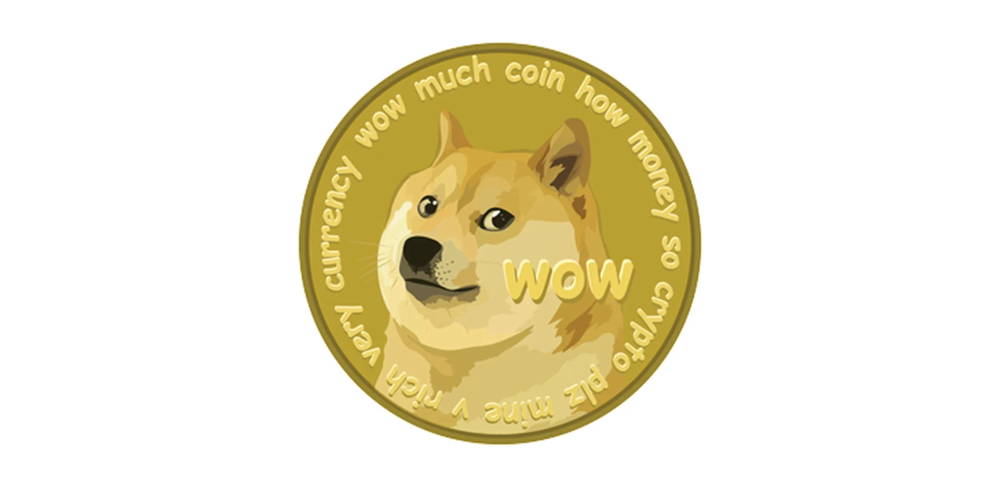
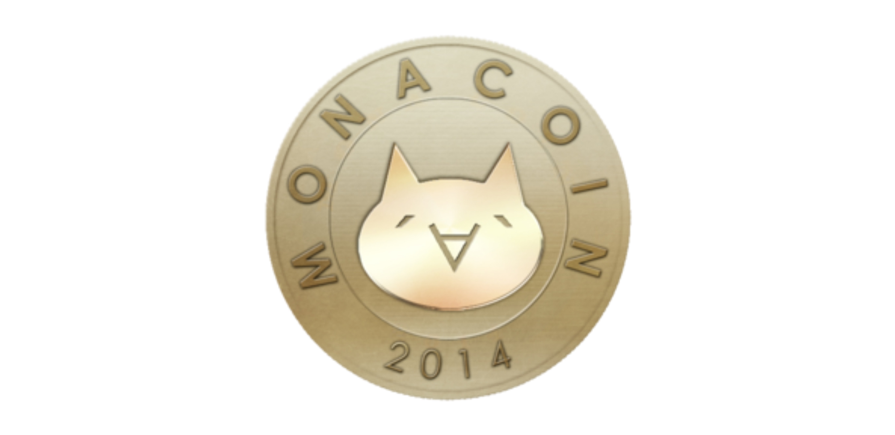

Paweł Rusak
Technologia Blockchain
Blockchain (z ang. łańcuch bloków) jest technologią związaną z rejestrowaniem danych. W przypadku bitcoina i innych kryptowalut pełni rolę spisu wszystkich transakcji oraz stanu posiadania. Jest cyfrową księgą, do której każdy może zajrzeć, ale nikt nie jest w stanie zmieniać raz zapisanych w niej danych. W ten sposób osoby, które nie znają się wzajemnie i sobie nie ufają, mogą zawierać przez Internet całkowicie pewne umowy i transakcje.
WEB 3.0
Web 3.0 to trzecia generacja usług internetowych dla stron i aplikacji, która koncentruje się na wykorzystaniu maszynowego rozumienia danych w celu zapewnienia sieci opartej na danych i semantycznej. Ostatecznym celem Web 3.0 jest stworzenie bardziej inteligentnych, połączonych i otwartych stron internetowych. Web 3.0 nie został jeszcze jednak wdrożony.

Dogecoin (DOGE) jest oparty na popularnym internetowym memie dotyczącym „pieseła” i zawiera Shiba Inu na swoim logo. Waluta cyfrowa typu open source została stworzona przez Billy'ego Markusa z Portland w stanie Oregon i Jacksona Palmera z Sydney w Australii i została oddzielona od Litecoina w grudniu 2013 roku. Twórcy Dogecoina przewidzieli go jako zabawną, beztroską kryptowalutę, która byłaby bardziej atrakcyjna poza podstawową publicznością Bitcoina, ponieważ była oparta na memie związanym z psem. Dyrektor generalny Tesli, Elon Musk, opublikował kilka tweetów w mediach społecznościowych, mówiących, że Dogecoin jest jego ulubioną monetą.

Jako wczesny projekt kryptograficzny, MONA przypomina wielu swoich poprzedników, takich jak Bitcoin i Litecoin, ponieważ jego głównym celem jest ułatwienie codziennych transakcji P2P jako waluty fiducjarnej. Projekt MonaCoin wywodzi swoją nazwę od japońskiej postaci kota ASCII opartej na memach o imieniu Mona, która stała się popularna na tablicy obrazowej 2chan. To tutaj również pomysł na projekt został po raz pierwszy opublikowany w 2013 roku przez tzw. Pana Watanabe. W oryginalnym poście 2chan przedstawiającym projekt MonaCoin, pan Watanabe opisał monetę jako podobną do wielu zastrzeżonych monet, które są powszechne w grach wideo.

Litecoin jest kryptowalutą zaprojektowaną w celu zapewnienia szybkich, bezpiecznych i niedrogich płatności dzięki wykorzystaniu unikalnych właściwości technologii blockchain.
Została ona stworzona w oparciu o protokół Bitcoin (BTC), ale różni się zastosowanym algorytmem haszowania, wysokością twardego limitu, czasem transakcji bloku i kilkoma innymi czynnikami. Czas przetwarzania bloku w Litecoin wynosi tylko 2,5 minuty, co w połączeniu z wyjątkowo niskimi opłatami transakcyjnymi sprawia, że moneta nadaje się do mikrotransakcji i płatności w punktach sprzedaży.

Moneta Shiba Inu została utworzona w sierpniu 2020, przez anonimową osobę lub grupę występującą pod pseudonimem „Ryoshi”. Meme coin szybko zyskała na szybkości i wartości, ponieważ społeczność inwestorów została przyciągnięta urokiem monety w połączeniu z nagłówkami i tweetami od osobistości takich jak Elon Musk i Vitalik Buterin.

Axie Infinity to gra bitewna oparta na blockchain, która jest częściowo własnością graczy, biorą także udział w jej obsłudze.
Zainspirowana popularnymi grami, takimi jak Pokémon i Tamagotchi, Axie Infinity pozwala graczom zbierać, rozmnażać, hodować, walczyć i handlować stworzeniami opartymi na tokenach, znanymi jako Axies.